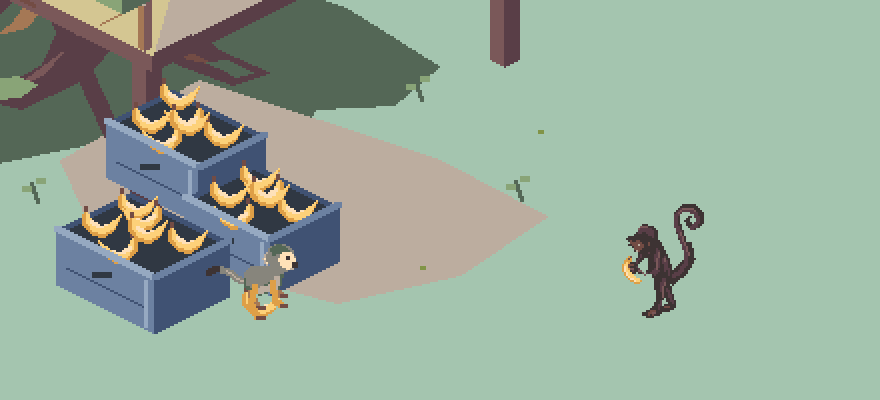

A small, quick courier with a pale face mask, olive-gray back, golden limbs, and a long balancing tail.
Watch the empty sprint, handoff, loaded return, and drop into the existing collection boxes. This is an art demonstration; delivery timing is illustrative.

Loading sprites…
Watch for 15 seconds, then pause at native scale and scrub the final → first dart frame. Pass: readable directions and fruit, quick alternating strides, no clipped pixels, and a visible handoff followed by a drop into the box. Take and drop repeat here for inspection; play them once in game.